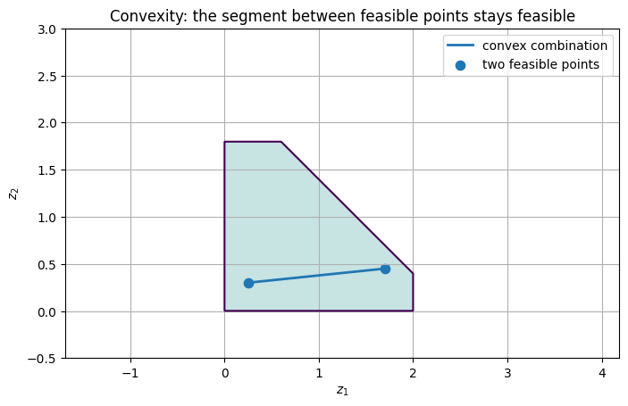
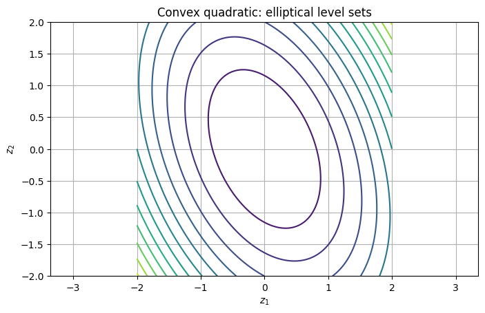
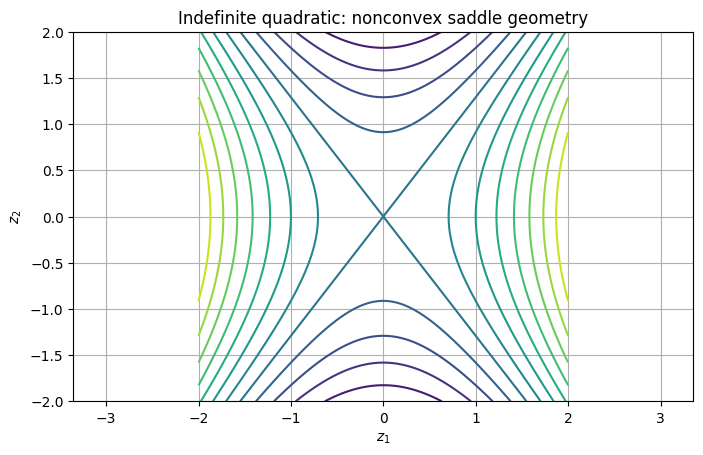
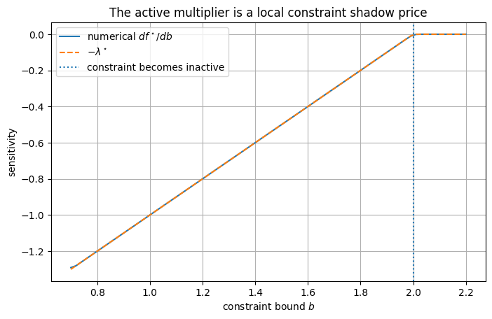
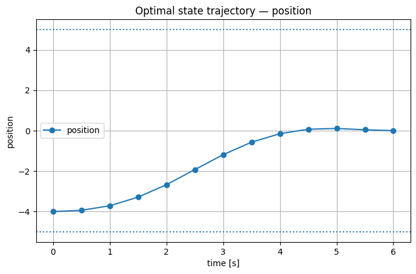
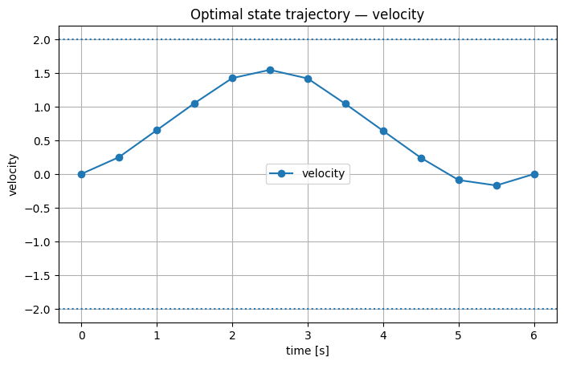
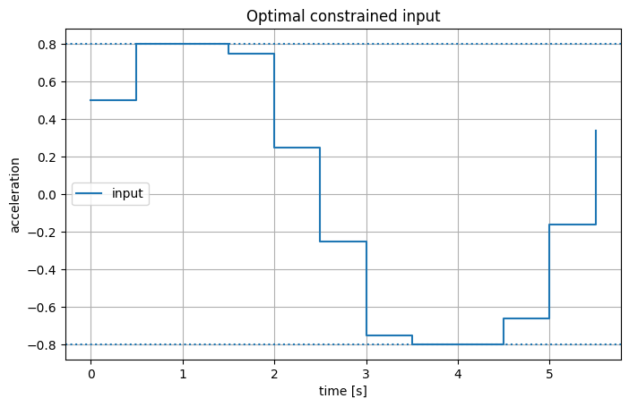
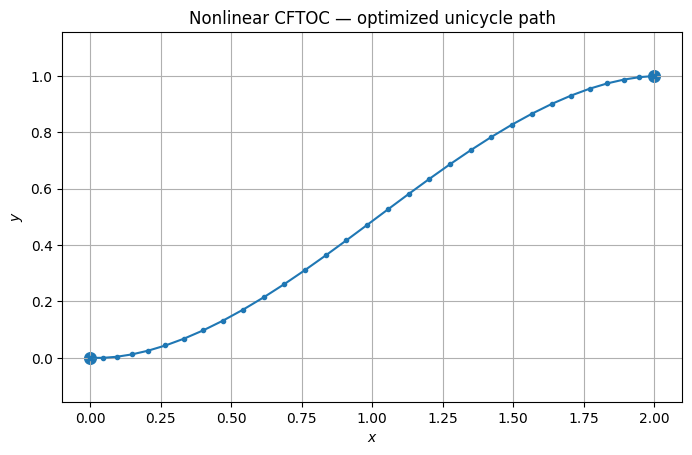
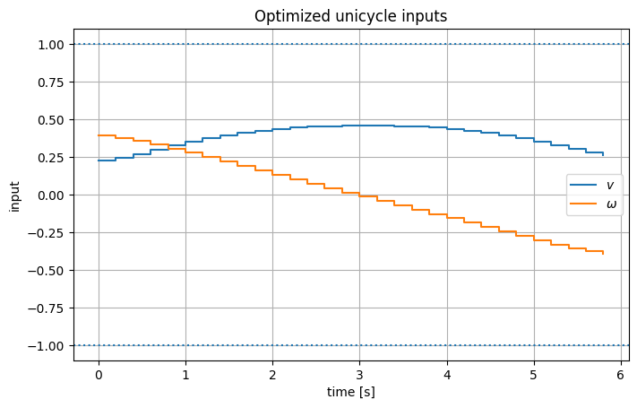

from pathlib import Path
import sys
import numpy as np
import matplotlib.pyplot as plt
from scipy.linalg import block_diag
from scipy.optimize import minimize, minimize_scalar, NonlinearConstraint, Bounds
ROOT = Path.cwd().resolve()
if ROOT.name == "notebooks":
ROOT = ROOT.parent
sys.path.insert(0, str(ROOT / "src"))
from advanced_mpc_lmpc.qp import solve_qp
from advanced_mpc_lmpc.linear import prediction_matrices, rollout
np.set_printoptions(precision=5, suppress=True)
plt.rcParams.update({
"figure.figsize": (8, 4.8),
"axes.grid": True,
})
Scope of this notebook
This chapter is intentionally narrower than the full repository.
| Topic | Here? | Where it is developed |
|---|---|---|
| Convex sets and convex functions | Yes | 01 |
| LPs, QPs, KKT conditions, duality | Yes | 01 |
| Finite-horizon optimal control / CFTOC | Yes | 01 |
| Sparse and condensed optimal-control formulations | Yes | 01 |
| Nonlinear finite-horizon control example | Yes | 01 |
| Polytope reachability and invariant-set algorithms | No | 02 |
| Recursive feasibility and MPC stability proofs | No | 03 |
| Vehicle–bike mixed-integer collision avoidance | No | 04 |
| Learning MPC safe sets and learned terminal costs | No | 05 |
| Minimum-time racing in Frenet coordinates | No | 06 |
| Local data-driven prediction models | No | 07 |
| Dynamic programming and reinforcement learning | No | 08 |
Important: a CFTOC problem is a finite-horizon optimization problem.
MPC is the feedback strategy obtained by repeatedly solving such a problem, applying the first action, measuring the new state, and solving again.We stop before the receding-horizon stability theory; that belongs to Notebook 03.
Learning objectives
After working through this notebook, you should be able to:
- write an optimization problem in standard constrained form;
- recognize common convex sets used in control;
- test convexity of a quadratic objective using its Hessian;
- explain why convexity changes the meaning of a local optimum;
- derive the Lagrangian, dual function, and KKT conditions;
- interpret Lagrange multipliers as constraint shadow prices;
- distinguish LP, convex QP, nonconvex QP, NLP, and mixed-integer formulations;
- formulate a constrained finite-time optimal-control problem;
- distinguish the prediction model from the plant/test model;
- derive the stacked prediction equation
X=S_xx_0+S_uU;
- derive the condensed QP Hessian and linear term;
- translate state, input, terminal, and input-rate constraints into matrix inequalities;
- construct equivalent sparse and condensed QPs and verify that they agree;
- understand why a nonlinear unicycle CFTOC becomes a nonconvex nonlinear program.
Table of Contents
- Part I — Optimization as geometry — I.1 The generic constrained optimization problem · I.2 Convex sets · I.3 Convex functions · I.4 Convex optimization problems · I.5 LP, convex QP, nonconvex QP, and mixed-integer problems
- Part II — Optimality, duality, and KKT conditions — II.1 Unconstrained optimality · II.2 The Lagrangian · II.3 The dual function and weak duality · II.4 Karush–Kuhn–Tucker conditions · II.5 A QP we can solve analytically · II.6 Lagrange multipliers as sensitivity information · II.7 Dual of a strictly convex QP · II.8 Hard and soft constraints · II.9 Solver classes and what they mean
- Part III — Constrained finite-time optimal control — III.1 Plant dynamics versus prediction dynamics · III.2 The CFTOC problem · III.3 Direct transcription: keep states and inputs as decision variables · III.4 Condensing: eliminate all predicted states · III.5 Condensing a quadratic cost · III.6 Condensing constraints
- Part IV — A complete linear-quadratic CFTOC — IV.1 The same CFTOC in sparse form · IV.2 Sparse versus condensed formulations
- Part V — A nonlinear CFTOC: the unicycle — V.1 Model · V.2 Nonlinear terminal-pose problem · V.3 What changed when the dynamics became nonlinear?
- Part VI — Numerical and modeling habits — VI.1 Never report only “the solver converged” · VI.2 Scaling · VI.3 Modeling decisions are optimization decisions
- Part VII — Check your understanding
- Part VIII — Exercises
- Part IX — Where the repository goes next
- Part X — Scope and further reading
Part I — Optimization as geometry
I.1 The generic constrained optimization problem
A broad class of optimization problems can be written as
\begin{aligned}
\min_{z\in\mathbb R^n}\quad & f(z)\\
\text{subject to}\quad
& g_i(z)\le 0,\qquad i=1,\ldots,m,\\
& h_j(z)=0,\qquad j=1,\ldots,p.
\end{aligned}
The vector z contains the decision variables.
The set
\mathcal F
=
\left\{
z:
g_i(z)\le 0,\;
h_j(z)=0
\right\}
is the feasible set.
The optimizer is
z^\star\in\arg\min_{z\in\mathcal F}f(z),
and the optimal value is
f^\star=f(z^\star).
This distinction matters:
- the optimizer is a point (or a set of points);
- the optimal value is a scalar;
- a point can be feasible without being optimal;
- a problem can be infeasible, unbounded, or have multiple minimizers.
In control, z will often contain an entire predicted state/input trajectory.
I.2 Convex sets
A set \mathcal C\subseteq\mathbb R^n is convex if, for every x,y\in\mathcal C and every \theta\in[0,1],
\theta x+(1-\theta)y\in\mathcal C.
Geometrically: the full line segment joining any two feasible points remains feasible.
Several sets appear constantly in optimization and MPC.
Affine set
\mathcal A=\{z:Az=b\}.
Hyperplane
\mathcal H=\{z:a^\top z=b\}.
Half-space
\mathcal H_-=\{z:a^\top z\le b\}.
Polyhedron
An intersection of finitely many half-spaces:
\mathcal P=\{z:Gz\le h\}.
A bounded polyhedron is a polytope.
State constraints, actuator limits, rate limits, and many terminal constraints in linear MPC are naturally represented by these objects.
# A 2-D convex feasible set defined by linear inequalities.
x1 = np.linspace(-0.5, 3.0, 500)
x2 = np.linspace(-0.5, 3.0, 500)
X1, X2 = np.meshgrid(x1, x2)
mask = (
(X1 >= 0.0)
& (X2 >= 0.0)
& (X1 + X2 <= 2.4)
& (X1 <= 2.0)
& (X2 <= 1.8)
)
plt.figure()
plt.contourf(X1, X2, mask.astype(float), levels=[0.5, 1.5], alpha=0.25)
plt.contour(X1, X2, mask.astype(float), levels=[0.5], linewidths=1.5)
a = np.array([0.25, 0.30])
b = np.array([1.70, 0.45])
theta = np.linspace(0.0, 1.0, 100)
segment = theta[:, None] * a + (1.0 - theta[:, None]) * b
plt.plot(segment[:, 0], segment[:, 1], linewidth=2, label="convex combination")
plt.scatter([a[0], b[0]], [a[1], b[1]], s=55, label="two feasible points")
plt.xlabel(r"$z_1$")
plt.ylabel(r"$z_2$")
plt.title("Convexity: the segment between feasible points stays feasible")
plt.axis("equal")
plt.legend()
plt.show()

Why convexity matters geometrically
If \mathcal F is convex, there are no disconnected feasible “islands.” This does not by itself guarantee that optimization is easy—the objective matters too—but it gives the feasible geometry needed by convex optimization theory.
Useful closure properties:
- the intersection of convex sets is convex;
- affine images of convex sets are convex;
- inverse images of convex sets under affine maps are convex;
- a Cartesian product of convex sets is convex.
These facts explain why stacking many linear state/input constraints over a horizon still yields a convex feasible set.
I.3 Convex functions
A function f:\mathcal C\to\mathbb R on a convex domain is convex if
f(\theta x+(1-\theta)y)
\le
\theta f(x)+(1-\theta)f(y)
for all x,y\in\mathcal C and \theta\in[0,1].
For a differentiable convex function,
f(y)\ge f(x)+\nabla f(x)^\top(y-x).
So every tangent hyperplane is a global lower bound.
For a twice continuously differentiable function,
\nabla^2 f(z)\succeq0
everywhere on a convex domain is sufficient for convexity.
For the quadratic function
f(z)=\frac12 z^\top Pz+q^\top z+r,
the Hessian is simply
\nabla^2 f=P.
Therefore
\boxed{
f\text{ is convex}
\iff
P\succeq0.
}
If P\succ0, the function is strictly convex.
# Compare a convex quadratic with an indefinite (nonconvex) quadratic.
P_convex = np.array([[3.0, 0.8],
[0.8, 1.5]])
P_nonconvex = np.array([[1.0, 0.0],
[0.0, -0.6]])
print("Convex quadratic eigenvalues: ", np.linalg.eigvalsh(P_convex))
print("Nonconvex quadratic eigenvalues:", np.linalg.eigvalsh(P_nonconvex))
g = np.linspace(-2.0, 2.0, 250)
Z1, Z2 = np.meshgrid(g, g)
F1 = 0.5 * (
P_convex[0, 0] * Z1**2
+ 2 * P_convex[0, 1] * Z1 * Z2
+ P_convex[1, 1] * Z2**2
)
F2 = 0.5 * (
P_nonconvex[0, 0] * Z1**2
+ 2 * P_nonconvex[0, 1] * Z1 * Z2
+ P_nonconvex[1, 1] * Z2**2
)
plt.figure()
plt.contour(Z1, Z2, F1, levels=12)
plt.xlabel(r"$z_1$")
plt.ylabel(r"$z_2$")
plt.title("Convex quadratic: elliptical level sets")
plt.axis("equal")
plt.show()
plt.figure()
plt.contour(Z1, Z2, F2, levels=12)
plt.xlabel(r"$z_1$")
plt.ylabel(r"$z_2$")
plt.title("Indefinite quadratic: nonconvex saddle geometry")
plt.axis("equal")
plt.show()
Convex quadratic eigenvalues: [1.15341 3.34659] Nonconvex quadratic eigenvalues: [-0.6 1. ]


I.4 Convex optimization problems
A standard differentiable convex optimization problem has the form
\begin{aligned}
\min_z\quad & f_0(z)\\
\text{s.t.}\quad
& f_i(z)\le0,\qquad i=1,\ldots,m,\\
& Az=b,
\end{aligned}
where
- f_0 is convex;
- every inequality function f_i is convex;
- equality constraints are affine.
The key consequence is
\boxed{
\text{every local optimum is a global optimum.}
}
If, in addition, the objective is strictly convex on the feasible set, there is at most one optimizer.
This is the main reason convexity is so valuable in control: it changes optimization from “search for a good local solution” into “solve a problem with global optimality structure.”
I.5 LP, convex QP, nonconvex QP, and mixed-integer problems
Linear program (LP)
\begin{aligned}
\min_z\quad & c^\top z\\
\text{s.t.}\quad & Gz\le h,\\
& Az=b.
\end{aligned}
Convex quadratic program (QP)
\begin{aligned}
\min_z\quad
&\frac12z^\top Pz+q^\top z\\
\text{s.t.}\quad
&Gz\le h,\\
&Az=b,
\end{aligned}
with
P\succeq0.
A linear optimal-control problem with quadratic costs and polyhedral constraints is typically a QP.
Nonconvex QP
The same quadratic form becomes nonconvex if P is indefinite.
Mixed-integer optimization
If some decision variables satisfy conditions such as
s_i\in\{0,1\},
the feasible set becomes discrete/nonconvex. This is the mechanism used later to encode logical alternatives such as “pass before an obstacle” versus “remain behind it.”
We postpone the vehicle–bike mixed-integer example to Notebook 04.
Part II — Optimality, duality, and KKT conditions
II.1 Unconstrained optimality
For
\min_z f(z),
a differentiable local optimum z^\star in the interior of the domain must satisfy
\nabla f(z^\star)=0.
For a twice differentiable function, a local minimum also requires the Hessian to be positive semidefinite at that point:
\nabla^2 f(z^\star)\succeq0.
For a convex differentiable function, the condition
\nabla f(z^\star)=0
is not merely local—it is sufficient for global optimality.
II.2 The Lagrangian
For
\begin{aligned}
\min_z\quad &f(z)\\
\text{s.t.}\quad &g(z)\le0,\\
&h(z)=0,
\end{aligned}
introduce multipliers
\lambda\ge0,\qquad \nu\in\mathbb R^p
and define
\boxed{
L(z,\lambda,\nu)
=
f(z)+\lambda^\top g(z)+\nu^\top h(z).
}
The multipliers quantify how strongly the active constraints influence the optimum.
This interpretation becomes very useful in control:
- a multiplier on steering saturation tells us how costly that limit is;
- a multiplier on a state boundary tells us how strongly it shapes the optimal trajectory;
- a zero multiplier usually indicates that the corresponding inequality is locally inactive.
II.3 The dual function and weak duality
The Lagrange dual function is
d(\lambda,\nu)
=
\inf_z L(z,\lambda,\nu).
For any dual-feasible \lambda\ge0,
d(\lambda,\nu)\le f^\star.
This is weak duality: every dual-feasible point provides a lower bound on the primal optimum.
The dual problem is
\max_{\lambda\ge0,\nu}d(\lambda,\nu).
If its optimum equals the primal optimum,
d^\star=f^\star,
we have strong duality.
For convex problems, a standard sufficient constraint qualification is Slater's condition: roughly, there exists a feasible point that satisfies every non-affine inequality strictly and lies in the relative interior of the domain.
When strong duality holds, primal/dual solutions provide an optimality certificate through the primal-dual gap.
II.4 Karush–Kuhn–Tucker conditions
Under the usual differentiability assumptions, and in particular for convex problems satisfying an appropriate constraint qualification such as Slater's condition, an optimum satisfies:
1. Stationarity
\nabla f(z^\star)
+
\sum_{i=1}^m\lambda_i^\star\nabla g_i(z^\star)
+
\sum_{j=1}^p\nu_j^\star\nabla h_j(z^\star)
=0.
2. Primal feasibility
g_i(z^\star)\le0,\qquad h_j(z^\star)=0.
3. Dual feasibility
\lambda_i^\star\ge0.
4. Complementary slackness
\boxed{
\lambda_i^\star g_i(z^\star)=0.
}
This last relation has an immediate interpretation:
- if g_i(z^\star)<0, then \lambda_i^\star=0;
- if \lambda_i^\star>0, then the constraint must be active.
For differentiable convex problems with strong duality, the KKT conditions are also sufficient for global optimality.
II.5 A QP we can solve analytically
Consider
\min_z \|z-c\|_2^2,
\qquad
c=
\begin{bmatrix}
1.2\\0.8
\end{bmatrix},
subject to
z_1+z_2\le1.
The unconstrained minimizer is z=c, but
1.2+0.8=2>1,
so the constraint is active at the constrained optimum.
Dropping the constant c^\top c, the objective is
\frac12z^\top Pz+q^\top z,
with
P=2I,
\qquad
q=-2c.
Let
a=
\begin{bmatrix}1\\1\end{bmatrix}.
The KKT stationarity condition is
2z-2c+\lambda a=0,
so
z=c-\frac{\lambda}{2}a.
Since the inequality is active,
a^\top z=1,
hence
\lambda^\star=1
and
\boxed{
z^\star=
\begin{bmatrix}
0.7\\0.3
\end{bmatrix}.
}
c = np.array([1.2, 0.8])
P_qp = 2.0 * np.eye(2)
q_qp = -2.0 * c
A_qp = np.array([[1.0, 1.0]])
b_qp = np.array([1.0])
qp = solve_qp(P_qp, q_qp, A_ub=A_qp, b_ub=b_qp)
z_star = qp.x
lambda_star = 1.0 # obtained analytically above
print("Solver success:", qp.success)
print("z* :", z_star)
print("expected :", np.array([0.7, 0.3]))
print("constraint :", A_qp @ z_star, "<=", b_qp)
print("lambda* :", lambda_star)
Solver success: True z* : [0.7 0.3] expected : [0.7 0.3] constraint : [1.] <= [1.] lambda* : 1.0
# Verify the four KKT ingredients numerically.
grad_f = P_qp @ z_star + q_qp
g = float((A_qp @ z_star - b_qp)[0])
stationarity = grad_f + A_qp.T.ravel() * lambda_star
complementarity = lambda_star * g
print("gradient of objective :", grad_f)
print("stationarity residual :", stationarity)
print("primal residual g(z*) :", g)
print("dual feasibility :", lambda_star >= 0.0)
print("complementarity :", complementarity)
gradient of objective : [-1. -1.] stationarity residual : [0. 0.] primal residual g(z*) : 1.1102230246251565e-15 dual feasibility : True complementarity : 1.1102230246251565e-15
II.6 Lagrange multipliers as sensitivity information
Now replace the bound 1 with a parameter b:
z_1+z_2\le b.
When this constraint remains active, the sensitivity relation is
\frac{d f^\star}{db}=-\lambda^\star.
So the multiplier is a shadow price:
how much would the optimal cost improve if the constraint were relaxed slightly?
For the present QP,
\lambda^\star=2-b
while the constraint is active.
bs = np.linspace(0.7, 2.2, 80)
values = []
lambdas = []
for b in bs:
res = solve_qp(P_qp, q_qp, A_ub=A_qp, b_ub=np.array([b]))
values.append(res.objective)
lambdas.append(max(2.0 - b, 0.0))
values = np.asarray(values)
lambdas = np.asarray(lambdas)
dv_db = np.gradient(values, bs)
plt.figure()
plt.plot(bs, dv_db, label=r"numerical $d f^\star/db$")
plt.plot(bs, -lambdas, "--", label=r"$-\lambda^\star$")
plt.axvline(2.0, linestyle=":", label="constraint becomes inactive")
plt.xlabel(r"constraint bound $b$")
plt.ylabel("sensitivity")
plt.title("The active multiplier is a local constraint shadow price")
plt.legend()
plt.show()

II.7 Dual of a strictly convex QP
Consider
\begin{aligned}
\min_z\quad
&\frac12z^\top Pz+q^\top z\\
\text{s.t.}\quad
&Az\le b,
\end{aligned}
with P\succ0.
The Lagrangian is
L(z,\lambda)
=
\frac12z^\top Pz+q^\top z+\lambda^\top(Az-b),
\qquad
\lambda\ge0.
Minimization with respect to z gives
Pz+q+A^\top\lambda=0,
hence
z(\lambda)
=
-P^{-1}(q+A^\top\lambda).
Substituting back,
\boxed{
d(\lambda)
=
-\frac12
(q+A^\top\lambda)^\top
P^{-1}
(q+A^\top\lambda)
-b^\top\lambda.
}
The dual problem is
\max_{\lambda\ge0}d(\lambda).
This gives a second way to see the same multiplier and allows us to inspect the primal-dual gap.
P_inv = np.linalg.inv(P_qp)
def dual_value(lam):
lam = float(lam)
y = q_qp + A_qp.T.ravel() * lam
return -0.5 * y @ P_inv @ y - b_qp[0] * lam
dual_res = minimize_scalar(
lambda lam: -dual_value(lam),
bounds=(0.0, 10.0),
method="bounded",
)
lam_dual = dual_res.x
d_star = dual_value(lam_dual)
p_star = qp.objective
print("primal optimum :", p_star)
print("dual optimum :", d_star)
print("primal-dual gap :", p_star - d_star)
print("dual multiplier :", lam_dual)
print("analytical multiplier:", lambda_star)
primal optimum : -1.5800000000000012 dual optimum : -1.58 primal-dual gap : -1.1102230246251565e-15 dual multiplier : 1.0000000000000004 analytical multiplier: 1.0
II.8 Hard and soft constraints
A hard constraint
a^\top z\le b
must always be satisfied.
Sometimes feasibility is more important than exact enforcement. Introduce a slack variable
\epsilon\ge0
and write
a^\top z\le b+\epsilon.
Then penalize the violation:
J_{\text{soft}}
=
J+\rho\epsilon
or
J_{\text{soft}}
=
J+\rho\epsilon^2.
This produces a soft constraint.
The distinction is an engineering decision:
- physical actuator limits are usually hard;
- collision constraints should normally be treated as hard safety requirements;
- comfort or tracking envelopes may sometimes be softened;
- a slack variable can prevent numerical infeasibility, but it does not make a safety violation acceptable.
Always document which constraints are hard and which are soft.
II.9 Solver classes and what they mean
The mathematical structure determines the solver class.
| Structure | Typical class |
|---|---|
| linear objective + linear constraints | LP |
| convex quadratic objective + linear constraints | convex QP |
| nonlinear smooth objective/constraints | NLP |
| integer/binary decisions | MILP / MIQP / MINLP |
| indefinite quadratic objective | nonconvex QP |
This repository deliberately uses SciPy-based routines so that the examples run without an external solver runtime.
For large real-time MPC problems, dedicated solvers are often more appropriate, for example OSQP, qpOASES, HPIPM, FORCES, GUROBI, MOSEK, or other problem-specific tools.
The solver name is less important than understanding the structure of the problem it is given.
Part III — Constrained finite-time optimal control
III.1 Plant dynamics versus prediction dynamics
Let the physical/test system evolve as
x[t+1]
=
f_{\mathrm{test}}(x[t],u[t]).
Inside the optimizer we use a prediction model
x_{k+1}
=
f(x_k,u_k).
The two functions need not be identical.
This notation distinction is important:
- t denotes real closed-loop time;
- k denotes prediction time inside the optimization;
- f_{\mathrm{test}} represents the system being controlled;
- f is the model used to predict its future.
If f=f_{\mathrm{test}}, we have a nominal perfect-model simulation. If they differ, prediction errors and robustness become relevant.
We will later study more sophisticated handling of uncertainty; here we first formulate the nominal optimization problem correctly.
III.2 The CFTOC problem
Given the measured/current state
x_0=\bar x,
consider
\begin{aligned}
\min_{u_0,\ldots,u_{N-1}}
\quad&
p(x_N)
+
\sum_{k=0}^{N-1}q(x_k,u_k)\\
\text{subject to}\quad
&
x_{k+1}=f(x_k,u_k),
\\
&
x_k\in\mathcal X,
\qquad
u_k\in\mathcal U,
\\
&
x_N\in\mathcal X_T,
\\
&
x_0=\bar x.
\end{aligned}
where
- q(x,u) is the stage cost;
- p(x_N) is the terminal cost;
- \mathcal X is the admissible state set;
- \mathcal U is the admissible input set;
- \mathcal X_T is a terminal target/set.
This is a constrained finite-time optimal-control problem (CFTOC).
CFTOC is not yet MPC
A one-shot CFTOC gives an open-loop optimal sequence
U^\star=
\{u_0^\star,\ldots,u_{N-1}^\star\}.
MPC will later solve a related problem repeatedly in feedback.
III.3 Direct transcription: keep states and inputs as decision variables
For a horizon N, define
X=
\begin{bmatrix}
x_1\\x_2\\\vdots\\x_N
\end{bmatrix},
\qquad
U=
\begin{bmatrix}
u_0\\u_1\\\vdots\\u_{N-1}
\end{bmatrix}.
A sparse/direct formulation uses
z=
\begin{bmatrix}
X\\U
\end{bmatrix}
as the optimization variable.
The dynamics are equality constraints.
For the LTI system
x_{k+1}=Ax_k+Bu_k,
they become
\begin{aligned}
x_1-Bu_0 &= Ax_0,\\
x_2-Ax_1-Bu_1 &=0,\\
&\vdots\\
x_N-Ax_{N-1}-Bu_{N-1}&=0.
\end{aligned}
This formulation contains many variables, but its matrices are highly sparse.
That sparsity is valuable for large horizons and specialized optimal-control solvers.
III.4 Condensing: eliminate all predicted states
Because the linear dynamics can be propagated analytically,
x_1=Ax_0+Bu_0,
x_2
=
A^2x_0+ABu_0+Bu_1,
x_3
=
A^3x_0+A^2Bu_0+ABu_1+Bu_2.
Stacking the predictions gives
\boxed{
X=S_xx_0+S_uU,
}
where
S_x=
\begin{bmatrix}
A\\
A^2\\
\vdots\\
A^N
\end{bmatrix}
and
S_u=
\begin{bmatrix}
B & 0 & \cdots & 0\\
AB & B & \cdots & 0\\
A^2B & AB & \ddots & \vdots\\
\vdots & \vdots & \ddots & B
\end{bmatrix}.
Now the state sequence is no longer an independent decision variable.
The optimizer can work only with U.
# Build and verify prediction matrices on a double integrator.
Ts = 0.5
A = np.array([
[1.0, Ts],
[0.0, 1.0],
])
B = np.array([
[0.5 * Ts**2],
[Ts],
])
N = 6
Sx, Su = prediction_matrices(A, B, N)
x0 = np.array([-2.0, 0.25])
U_test = np.array([[0.4], [0.2], [0.0], [-0.2], [-0.3], [0.1]])
X_condensed = (Sx @ x0 + Su @ U_test.ravel()).reshape(N, 2)
X_rollout = rollout(A, B, x0, U_test)[1:]
print("max |stacked prediction - direct rollout| =",
np.max(np.abs(X_condensed - X_rollout)))
print("\nPredicted states:")
print(X_condensed)
max |stacked prediction - direct rollout| = 2.220446049250313e-16 Predicted states: [[-1.825 0.45 ] [-1.575 0.55 ] [-1.3 0.55 ] [-1.05 0.45 ] [-0.8625 0.3 ] [-0.7 0.35 ]]
III.5 Condensing a quadratic cost
Consider the quadratic finite-horizon cost
J
=
\sum_{k=1}^{N-1}x_k^\top Qx_k
+
x_N^\top Px_N
+
\sum_{k=0}^{N-1}u_k^\top Ru_k.
Define
\bar Q
=
\operatorname{blkdiag}(Q,\ldots,Q,P),
and
\bar R
=
\operatorname{blkdiag}(R,\ldots,R).
Then
J
=
X^\top\bar QX+U^\top\bar RU.
Substitute
X=S_xx_0+S_uU.
Expanding,
\begin{aligned}
J
={}&
U^\top
\left(
S_u^\top\bar QS_u+\bar R
\right)U
\\
&+
2x_0^\top S_x^\top\bar QS_uU
\\
&+
x_0^\top S_x^\top\bar QS_xx_0.
\end{aligned}
The last term is constant with respect to U.
Using the standard QP convention
\frac12U^\top HU+f^\top U,
we obtain
\boxed{
H
=
2\left(
S_u^\top\bar QS_u+\bar R
\right)
}
and
\boxed{
f(x_0)
=
2S_u^\top\bar QS_xx_0.
}
Notice that the current state x_0 enters the QP as a parameter.
III.6 Condensing constraints
Suppose the state set is polyhedral:
F_xx_k\le g_x.
Stacking gives
\bar F_xX\le\bar g_x.
Using
X=S_xx_0+S_uU,
we obtain
\boxed{
\bar F_xS_uU
\le
\bar g_x-\bar F_xS_xx_0.
}
Input constraints
F_uu_k\le g_u
can be stacked directly as linear inequalities in U.
A terminal equality
x_N=x_f
becomes
\boxed{
S_{u,N}U
=
x_f-S_{x,N}x_0.
}
Input-rate constraints
For
\Delta u_k=u_k-u_{k-1},
we can build a block difference matrix D such that
\Delta U=DU+d(u_{-1}).
Therefore
-\Delta u_{\max}
\le
DU+d(u_{-1})
\le
\Delta u_{\max}
is again a pair of linear inequalities.
def difference_matrix(N, m):
# D such that [u0, u1-u0, ..., uN-1-uN-2] = D U.
D = np.zeros((N * m, N * m))
I = np.eye(m)
D[:m, :m] = I
for k in range(1, N):
D[k*m:(k+1)*m, (k-1)*m:k*m] = -I
D[k*m:(k+1)*m, k*m:(k+1)*m] = I
return D
D_demo = difference_matrix(5, 1)
print(D_demo)
[[ 1. 0. 0. 0. 0.] [-1. 1. 0. 0. 0.] [ 0. -1. 1. 0. 0.] [ 0. 0. -1. 1. 0.] [ 0. 0. 0. -1. 1.]]
Part IV — A complete linear-quadratic CFTOC
We now solve one finite-horizon regulation problem end to end.
The plant model is the sampled double integrator
x_{k+1}=Ax_k+Bu_k,
with
x=
\begin{bmatrix}
p\\v
\end{bmatrix},
where p is position and v is velocity.
We impose:
|p_k|\le5,
\qquad
|v_k|\le2,
|u_k|\le0.8,
and
|\Delta u_k|\le0.5.
The terminal state must satisfy
x_N=0.
This is a convex QP.
Ts = 0.5
A = np.array([
[1.0, Ts],
[0.0, 1.0],
])
B = np.array([
[0.5 * Ts**2],
[Ts],
])
n, m = B.shape
N = 12
x0 = np.array([-4.0, 0.0])
Q = np.diag([1.0, 0.2])
P = np.diag([8.0, 1.0])
R = np.array([[0.10]])
Sx, Su = prediction_matrices(A, B, N)
Qbar = block_diag(*([Q] * (N - 1) + [P]))
Rbar = block_diag(*([R] * N))
H = 2.0 * (Su.T @ Qbar @ Su + Rbar)
f = 2.0 * Su.T @ Qbar @ Sx @ x0
print("Smallest eigenvalue of H:", np.min(np.linalg.eigvalsh(H)))
Smallest eigenvalue of H: 0.22561029149792766
# State constraints: |position| <= 5, |velocity| <= 2.
Fx = np.array([
[ 1.0, 0.0],
[-1.0, 0.0],
[ 0.0, 1.0],
[ 0.0, -1.0],
])
gx = np.array([5.0, 5.0, 2.0, 2.0])
Fbar = block_diag(*([Fx] * N))
gbar = np.tile(gx, N)
A_state = Fbar @ Su
b_state = gbar - Fbar @ Sx @ x0
# Input-rate constraints.
D = difference_matrix(N, m)
u_previous = np.array([0.0])
d_offset = np.zeros(N * m)
d_offset[:m] = -u_previous
du_max = 0.5
A_rate = np.vstack([D, -D])
b_rate = np.hstack([
du_max * np.ones(N * m) - d_offset,
du_max * np.ones(N * m) + d_offset,
])
A_ub = np.vstack([A_state, A_rate])
b_ub = np.hstack([b_state, b_rate])
# Terminal equality x_N = 0.
Sx_N = Sx[-n:, :]
Su_N = Su[-n:, :]
A_eq = Su_N
b_eq = -Sx_N @ x0
result_condensed = solve_qp(
H,
f,
A_ub=A_ub,
b_ub=b_ub,
A_eq=A_eq,
b_eq=b_eq,
lb=-0.8 * np.ones(N * m),
ub= 0.8 * np.ones(N * m),
)
qp_constant = float(x0 @ Sx.T @ Qbar @ Sx @ x0)
true_cost_condensed = result_condensed.objective + qp_constant
print("solver success :", result_condensed.success)
print("max constraint violation :", result_condensed.max_violation)
print("condensed objective (no constant):", result_condensed.objective)
print("dropped constant :", qp_constant)
print("physical finite-horizon cost :", true_cost_condensed)
solver success : True max constraint violation : 2.6201263381153694e-13 condensed objective (no constant): -248.90720110161092 dropped constant : 304.0 physical finite-horizon cost : 55.09279889838908
U_star = result_condensed.x.reshape(N, m)
X_star = (Sx @ x0 + Su @ result_condensed.x).reshape(N, n)
trajectory = np.vstack([x0, X_star])
t_x = Ts * np.arange(N + 1)
t_u = Ts * np.arange(N)
plt.figure()
plt.plot(t_x, trajectory[:, 0], marker="o", label="position")
plt.axhline(5.0, linestyle=":")
plt.axhline(-5.0, linestyle=":")
plt.xlabel("time [s]")
plt.ylabel("position")
plt.title("Optimal state trajectory — position")
plt.legend()
plt.show()
plt.figure()
plt.plot(t_x, trajectory[:, 1], marker="o", label="velocity")
plt.axhline(2.0, linestyle=":")
plt.axhline(-2.0, linestyle=":")
plt.xlabel("time [s]")
plt.ylabel("velocity")
plt.title("Optimal state trajectory — velocity")
plt.legend()
plt.show()
plt.figure()
plt.step(t_u, U_star[:, 0], where="post", label="input")
plt.axhline(0.8, linestyle=":")
plt.axhline(-0.8, linestyle=":")
plt.xlabel("time [s]")
plt.ylabel("acceleration")
plt.title("Optimal constrained input")
plt.legend()
plt.show()
print("terminal state:", X_star[-1])
print("maximum |u| :", np.max(np.abs(U_star)))
print("maximum |Δu| :", np.max(np.abs(np.diff(np.r_[u_previous, U_star[:, 0]]))))



terminal state: [-0. -0.] maximum |u| : 0.8 maximum |Δu| : 0.500000000000262
IV.1 The same CFTOC in sparse form
The condensed formulation eliminated X.
Now we solve the same optimization problem with the sparse decision vector
z=
\begin{bmatrix}
X\\U
\end{bmatrix}.
The cost matrix becomes block diagonal:
H_{\mathrm{sparse}}
=
2
\begin{bmatrix}
\bar Q & 0\\
0 & \bar R
\end{bmatrix}.
The dynamics reappear as equality constraints.
Mathematically, the sparse and condensed problems are equivalent. Computationally, they expose different structures to the solver.
nz = N * n + N * m
H_sparse = block_diag(2.0 * Qbar, 2.0 * Rbar)
f_sparse = np.zeros(nz)
# Dynamics equalities.
Aeq_dyn = np.zeros((N * n, nz))
beq_dyn = np.zeros(N * n)
for k in range(N):
row = slice(k*n, (k+1)*n)
x_next_col = slice(k*n, (k+1)*n)
Aeq_dyn[row, x_next_col] = np.eye(n)
u_col = slice(N*n + k*m, N*n + (k+1)*m)
Aeq_dyn[row, u_col] = -B
if k == 0:
beq_dyn[row] = A @ x0
else:
x_prev_col = slice((k-1)*n, k*n)
Aeq_dyn[row, x_prev_col] = -A
# Terminal equality x_N = 0.
Aeq_terminal = np.zeros((n, nz))
Aeq_terminal[:, (N-1)*n:N*n] = np.eye(n)
A_eq_sparse = np.vstack([Aeq_dyn, Aeq_terminal])
b_eq_sparse = np.hstack([beq_dyn, np.zeros(n)])
# State and rate inequalities.
A_state_sparse = np.hstack([
Fbar,
np.zeros((Fbar.shape[0], N*m)),
])
A_rate_sparse = np.hstack([
np.zeros((A_rate.shape[0], N*n)),
A_rate,
])
A_ub_sparse = np.vstack([A_state_sparse, A_rate_sparse])
b_ub_sparse = np.hstack([gbar, b_rate])
lb_sparse = np.hstack([
-np.inf * np.ones(N*n),
-0.8 * np.ones(N*m),
])
ub_sparse = np.hstack([
np.inf * np.ones(N*n),
0.8 * np.ones(N*m),
])
z0_sparse = np.hstack([X_star.reshape(-1), result_condensed.x])
result_sparse = solve_qp(
H_sparse,
f_sparse,
A_ub=A_ub_sparse,
b_ub=b_ub_sparse,
A_eq=A_eq_sparse,
b_eq=b_eq_sparse,
lb=lb_sparse,
ub=ub_sparse,
x0=z0_sparse,
)
U_sparse = result_sparse.x[N*n:].reshape(N, m)
X_sparse = result_sparse.x[:N*n].reshape(N, n)
print("sparse solver success:", result_sparse.success)
print("max |U_sparse - U_condensed|:",
np.max(np.abs(U_sparse - U_star)))
print("max |X_sparse - X_condensed|:",
np.max(np.abs(X_sparse - X_star)))
print("sparse physical cost :", result_sparse.objective)
print("condensed physical cost :", true_cost_condensed)
sparse solver success: True max |U_sparse - U_condensed|: 0.0 max |X_sparse - X_condensed|: 0.0 sparse physical cost : 55.09279889838899 condensed physical cost : 55.09279889838908
IV.2 Sparse versus condensed formulations
They solve the same finite-horizon control problem, but they expose different numerical structures.
Condensed formulation
Decision variable:
U\in\mathbb R^{Nm}.
Advantages:
- fewer decision variables;
- elegant derivation;
- useful for small/medium dense QPs;
- ideal for understanding how x_0 parameterizes the optimization.
Disadvantages:
- elimination can destroy sparsity;
- the condensed Hessian is often dense.
Sparse formulation
Decision variable:
(X,U)\in\mathbb R^{Nn+Nm}.
Advantages:
- dynamics remain sparse equality constraints;
- sparse linear algebra scales well;
- natural for large systems, nonlinear transcription, and structure-exploiting solvers.
Disadvantages:
- more explicit variables and constraints.
There is no universal winner. The better representation depends on problem size, horizon, solver technology, and real-time requirements.
Part V — A nonlinear CFTOC: the unicycle
V.1 Model
Consider
\dot x=v\cos\theta,
\dot y=v\sin\theta,
\dot\theta=\omega.
The state is
z=
\begin{bmatrix}
x\\y\\\theta
\end{bmatrix},
and the input is
u=
\begin{bmatrix}
v\\\omega
\end{bmatrix}.
With forward Euler discretization,
x_{k+1}
=
x_k+T_sv_k\cos\theta_k,
y_{k+1}
=
y_k+T_sv_k\sin\theta_k,
\theta_{k+1}
=
\theta_k+T_s\omega_k.
Unlike the linear double integrator, the prediction map contains sine and cosine terms. The resulting finite-horizon optimization is therefore a nonlinear program and is generally nonconvex.
V.2 Nonlinear terminal-pose problem
We ask the unicycle to move from
z_0=
\begin{bmatrix}
0\\0\\0
\end{bmatrix}
to
z_f=
\begin{bmatrix}
2\\1\\0
\end{bmatrix}
while satisfying
|v_k|\le1,
\qquad
|\omega_k|\le1,
and smooth input-rate bounds.
The cost penalizes control effort and changes in the control:
J
=
\alpha\sum_{k=0}^{N-1}\|u_k\|_2^2
+
\beta\sum_{k=1}^{N-1}\|u_k-u_{k-1}\|_2^2.
The terminal pose is imposed as a nonlinear equality constraint.
This example is deliberately small: its purpose is to show how CFTOC extends beyond QPs.
Ts_u = 0.2
N_u = 30
z0 = np.array([0.0, 0.0, 0.0])
zf = np.array([2.0, 1.0, 0.0])
def rollout_unicycle(Uvec):
U = np.asarray(Uvec).reshape(N_u, 2)
z = z0.copy()
states = [z.copy()]
for v, omega in U:
z = z + Ts_u * np.array([
v * np.cos(z[2]),
v * np.sin(z[2]),
omega,
])
states.append(z.copy())
return np.asarray(states)
def unicycle_cost(Uvec):
U = np.asarray(Uvec).reshape(N_u, 2)
dU = np.diff(U, axis=0)
effort = 0.05 * np.sum(U**2)
smoothness = 0.10 * np.sum(dU**2)
return effort + smoothness
def terminal_residual(Uvec):
return rollout_unicycle(Uvec)[-1] - zf
terminal_constraint = NonlinearConstraint(
terminal_residual,
lb=np.zeros(3),
ub=np.zeros(3),
)
def rate_map(Uvec):
U = np.asarray(Uvec).reshape(N_u, 2)
return np.diff(U, axis=0).reshape(-1)
rate_constraint = NonlinearConstraint(
rate_map,
lb=-0.20 * np.ones(2 * (N_u - 1)),
ub= 0.20 * np.ones(2 * (N_u - 1)),
)
input_bounds = Bounds(
np.tile([-1.0, -1.0], N_u),
np.tile([ 1.0, 1.0], N_u),
)
# Initial guess: move forward, turn, then unwind the heading.
U0 = np.zeros((N_u, 2))
U0[:, 0] = np.sqrt(5.0) / (N_u * Ts_u)
U0[:10, 1] = 0.25
U0[20:, 1] = -0.25
unicycle_result = minimize(
unicycle_cost,
U0.reshape(-1),
method="SLSQP",
bounds=input_bounds,
constraints=[terminal_constraint, rate_constraint],
options={
"ftol": 1e-10,
"maxiter": 2000,
"disp": False,
},
)
print("success :", unicycle_result.success)
print("message :", unicycle_result.message)
print("cost :", unicycle_result.fun)
print("terminal residual:", terminal_residual(unicycle_result.x))
success : True message : Optimization terminated successfully cost : 0.3166970313324845 terminal residual: [-0. 0. -0.]
U_uni = unicycle_result.x.reshape(N_u, 2)
Z_uni = rollout_unicycle(unicycle_result.x)
t_uni = Ts_u * np.arange(N_u)
plt.figure()
plt.plot(Z_uni[:, 0], Z_uni[:, 1], marker=".")
plt.scatter([z0[0], zf[0]], [z0[1], zf[1]], s=70)
plt.xlabel(r"$x$")
plt.ylabel(r"$y$")
plt.title("Nonlinear CFTOC — optimized unicycle path")
plt.axis("equal")
plt.show()
plt.figure()
plt.step(t_uni, U_uni[:, 0], where="post", label=r"$v$")
plt.step(t_uni, U_uni[:, 1], where="post", label=r"$\omega$")
plt.axhline(1.0, linestyle=":")
plt.axhline(-1.0, linestyle=":")
plt.xlabel("time [s]")
plt.ylabel("input")
plt.title("Optimized unicycle inputs")
plt.legend()
plt.show()


V.3 What changed when the dynamics became nonlinear?
For the linear-quadratic problem:
- dynamics were affine;
- constraints were linear;
- objective was convex quadratic;
- the problem was a convex QP.
For the unicycle:
- the dynamics contain \sin\theta and \cos\theta;
- terminal constraints depend nonlinearly on the control sequence;
- the optimization is a nonlinear program;
- the solution returned by a local NLP solver may depend on the initial guess.
Therefore,
\boxed{
\text{solver convergence}
\neq
\text{certificate of global optimality}
}
for a generic nonconvex nonlinear problem.
This distinction is fundamental when moving from linear MPC to nonlinear MPC.
Part VI — Numerical and modeling habits
VI.1 Never report only “the solver converged”
For every numerical optimal-control solution, inspect at least:
- solver status;
- constraint violation;
- terminal residual;
- active constraints;
- cost value;
- sensitivity to initialization for nonconvex problems;
- conditioning/scaling of states and inputs;
- whether the prediction model matches the simulated/physical plant.
A beautiful trajectory from an infeasible solution is not a valid control result.
VI.2 Scaling
Suppose one state is measured in millimeters and another in hundreds of meters per second. The corresponding optimization matrices can have very different numerical scales.
Poor scaling can produce:
- slow convergence;
- inaccurate KKT residuals;
- unreliable active-set identification;
- unnecessary sensitivity to solver tolerances.
A common remedy is to introduce scaled variables
\tilde x=D_x^{-1}x,
\qquad
\tilde u=D_u^{-1}u,
with diagonal scaling matrices chosen so typical values are of order one.
Weights and constraints must be transformed consistently.
VI.3 Modeling decisions are optimization decisions
Before writing code, answer:
- What is the decision variable?
- What model predicts the future?
- Which constraints are physical?
- Which constraints are safety-critical?
- Which can be softened?
- Is the terminal condition an equality, a set, or only a cost?
- Is the formulation convex?
- Are there discrete logical decisions?
- Is the model exact or approximate?
- Is the problem solved once, or repeatedly in feedback?
These questions determine the mathematics before they determine the software.
Part VII — Check your understanding
Try answering each question without looking back.
Q1. What makes a quadratic program convex?
Answer
The Hessian of its quadratic objective must be positive semidefinite and the feasible set must be convex. For the standard QP with affine equality and inequality constraints, this reduces to P\succeq0.
Q2. Why are equality constraints required to be affine in the standard convex form?
Answer
A nonlinear equality h(z)=0 generally produces a nonconvex feasible set. An affine equality preserves convexity.
Q3. What does complementary slackness tell you?
Answer
For each inequality, \lambda_i^\star g_i(z^\star)=0. An inactive inequality has zero multiplier; a positive multiplier implies the constraint is active.
Q4. What is the engineering meaning of a Lagrange multiplier?
Answer
It is a local shadow price: it measures the sensitivity of the optimal value to a small relaxation of the associated constraint.
Q5. What is the difference between weak and strong duality?
Answer
Weak duality always gives d^\star\le f^\star. Strong duality means equality, so the dual optimum certifies the primal optimum.
Q6. What is CFTOC?
Answer
A constrained finite-time optimal-control problem: optimize a finite input sequence subject to predicted dynamics, state/input constraints, and possibly terminal constraints.
Q7. Why is CFTOC not the same thing as MPC?
Answer
CFTOC is one finite-horizon optimization. MPC repeatedly solves a finite-horizon problem in closed loop and applies only the first optimized action before re-solving.
Q8. What does condensing do?
Answer
It eliminates predicted state variables using the dynamics, yielding X=S_xx_0+S_uU, so the optimization can be written only in terms of the input sequence U.
Q9. Why can sparse and condensed formulations return the same control?
Answer
They are algebraically equivalent representations of the same dynamics, cost, and constraints; the difference is numerical representation, not the underlying optimization problem.
Q10. Why is the unicycle problem nonconvex?
Answer
The state predictions depend nonlinearly on the decision variables through trigonometric terms such as \sin\theta and \cos\theta, so the feasible mapping is nonlinear and does not generally define a convex optimization problem.
Part VIII — Exercises
Exercise 1 — Convexity of a quadratic
For
P=
\begin{bmatrix}
2 & \alpha\\
\alpha & 1
\end{bmatrix},
find the range of \alpha for which
f(z)=\frac12z^\top Pz
is convex.
Exercise 2 — KKT by hand
Solve
\min_{z_1,z_2}
(z_1-3)^2+(z_2-1)^2
subject to
z_1+z_2\le2.
Derive z^\star and \lambda^\star from the KKT conditions.
Exercise 3 — Prediction matrices
For
x_{k+1}=Ax_k+Bu_k,
write x_4 explicitly as a function of x_0,u_0,u_1,u_2,u_3. Then identify the fourth block row of S_x and S_u.
Exercise 4 — State-constraint condensation
Starting from
F_xx_k\le g_x,
derive the inequality in U for a stacked horizon.
Exercise 5 — Rate constraints
Construct D for N=4 and a scalar input, and verify that
DU+
\begin{bmatrix}
-u_{-1}\\0\\0\\0
\end{bmatrix}
=
\begin{bmatrix}
u_0-u_{-1}\\
u_1-u_0\\
u_2-u_1\\
u_3-u_2
\end{bmatrix}.
Exercise 6 — Sparse versus condensed size
For n=8, m=2, and N=30, compare the number of decision variables in the sparse and fully condensed formulations.
What computational property may make the larger sparse problem faster anyway?
Exercise 7 — Nonlinear CFTOC
Change the unicycle target pose and initial guess.
Do you always obtain the same local solution? What does that tell you about nonconvex optimization?
Part IX — Where the repository goes next
This notebook established the optimization machinery.
The next chapters separate the remaining ideas instead of hiding them inside one giant notebook:
- 02 — Polytopes, reachability, and invariance: geometry of feasible/safe sets;
- 03 — MPC stability and terminal sets: recursive feasibility, shifted sequences, Lyapunov arguments;
- 04 — Collision avoidance CFTOC: logical maneuver choices and mixed-integer structure;
- 05 — Learning MPC: safe sets and terminal value functions learned from successful repetitions;
- 06 — Racing in Frenet coordinates: minimum-time control and track geometry;
- 07 — Data-driven local models: learning local prediction dynamics;
- 08 — Dynamic programming to reinforcement learning: Bellman recursion, values, policies;
- 09 — Capstone: synthesis and extensions.
The roadmap in Notebook 00 shows how these chapters fit together.
Part X — Scope and further reading
Scope. This notebook covers the optimization layer that the rest of the series builds on: convex sets and functions, LP and QP structure, Lagrangian duality and the KKT conditions, solver classes, hard and soft constraints, the constrained finite-time optimal-control problem, its sparse and condensed QP forms for linear systems, and a small nonlinear (unicycle) example. It assumes linear algebra and multivariable calculus. Receding-horizon feedback and its feasibility and stability theory are developed in Notebook 03.
Further reading.
- S. Boyd and L. Vandenberghe, Convex Optimization, Cambridge University Press, 2004: convex sets and functions, duality, KKT conditions.
- J. Nocedal and S. J. Wright, Numerical Optimization, 2nd ed., Springer, 2006: algorithms for quadratic and nonlinear programs.
- F. Borrelli, A. Bemporad and M. Morari, Predictive Control for Linear and Hybrid Systems, Cambridge University Press, 2017: constrained finite-time optimal control and its QP formulations.
- D. P. Bertsekas, Dynamic Programming and Optimal Control, Vol. I, 4th ed., Athena Scientific, 2017.
The repository file docs/references.md collects the references for the whole series.